Una provincia ecuatoriana llena de ríos, campos fértiles, tradiciones montuvias y gente trabajadora. Descubre su historia, sus paisajes y sus trece cantones en una sola página.
Los Ríos se encuentra en la región Costa del Ecuador. Su territorio se caracteriza por sus ríos, llanuras, actividad agrícola y cultura montuvia.
La provincia de Los Ríos es conocida por su riqueza agrícola y sus abundantes fuentes hídricas. Su clima cálido y sus suelos fértiles favorecen cultivos como banano, cacao, arroz, maíz y soya. La cultura montuvia forma parte importante de su identidad, expresándose en sus costumbres, gastronomía, música y festividades.
Bandera
Bandera de la provincia de Los Ríos
Escudo de la provincia de Los Ríos
Bandera de Ecuador
Autoridades
Prefecto de Los Ríos
Nombre: Jonny Enrique Terán Salcedo
Cargo: Máxima autoridad del Gobierno Provincial de Los Ríos (prefecto).
Función: Dirige y maneja la institución provincial, y vela por el desarrollo y las obras de toda la provincia.
Gobernador de Los Ríos
Nombre: Andrés Rizzo Bajaña
Cargo: Gobernador en funciones (encargado) de Los Ríos.
Función: Es el delegado del Presidente de la República en la provincia: organiza la labor política local y lleva allí la gestión del Gobierno central.
Población
13 — Cantones
898.652 — Habitantes · Censo 2022
Babahoyo — Capital provincial
Capital: Babahoyo
Población: 898.652 habitantes (Censo 2022).
Extensión: aproximadamente 7.205 km².
Fecha de provincialización: 6 de octubre de 1860.
Mapa
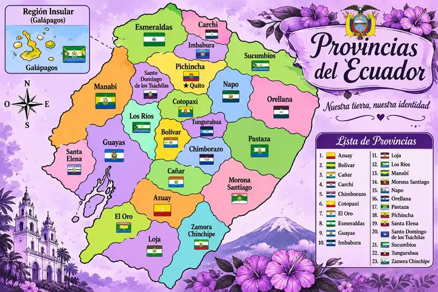
Los Ríos aparece en verde agua, entre Guayas, Bolívar, Cotopaxi y Santo Domingo de los Tsáchilas.
Cantones
La provincia tiene 13 cantones. Toca el nombre de uno para ver todos sus datos:
Baba
La Noble y Torera
Breve reseña
Baba es conocido como «La Noble y Torera». Está en la zona central de la provincia, junto a los ríos que alimentan la cuenca del Guayas, y su vida gira en torno a la agricultura, el comercio y las tradiciones montuvias.
Fecha de cantonización: 23 de junio de 1824
Más información
Extensión y límites: Abarca unos 516 km². Limita al norte con Vinces, al sur con Babahoyo y el Guayas, al este con Puebloviejo y Babahoyo, y al oeste con Vinces y el Guayas.
Economía y producción: Vive de la agricultura (arroz, cacao, maíz y banano) y de la ganadería. También hay artesanos que trabajan el cuero.
Fiestas y tradiciones: Festeja su cantonización cada 23 de junio y mantiene vivas las costumbres montubias, como los rodeos y las comidas de la zona.
Historia y datos curiosos: Se conoce como la Villa de San Francisco de Baba y es uno de los cantones más antiguos del Ecuador. En su época de auge compitió con Guayaquil en el comercio de la cuenca del Guayas. Por sus tierras pasaron Simón Bolívar y Antonio José de Sucre.
Parroquias
Urbana: Baba.
Rurales: Guare e Isla de Bejucal.
Platos típicos
Bollo de pescado, seco de gallina criolla y comidas tradicionales de la zona rural.
Lugares turísticos
Parque central y centro histórico. Punto de encuentro del cantón, con la iglesia matriz y el comercio local.
Isla de Bejucal. Parroquia rural de paisaje fluvial y agrícola, con construcciones antiguas y vida de campo.
Ruta de la miel. Recorrido comunitario sobre manejo de abejas en la zona de influencia del humedal Abras de Mantequilla, compartido con Vinces y Puebloviejo.
Complejo Turístico Boga. Complejo recreativo con piscinas, áreas para eventos y alojamiento.
Balneario El EncantoRío Baba
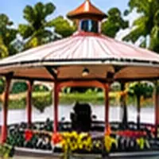
Parque Central
Confirma horarios, acceso y servicios antes de visitar estos lugares.
Hoteles donde alojarse
Complejo Turístico Boga (alojamiento y piscinas)
Nombres tomados de Google Maps; confirma precios, disponibilidad y calificaciones antes de reservar.
Babahoyo es la capital de la provincia de Los Ríos. Se levanta a orillas del río del mismo nombre, que durante siglos fue su vía de comercio. Es el centro administrativo, comercial y cultural de la provincia.
Fecha de cantonización: 25 de junio de 1824
Más información
Extensión y límites: Ocupa cerca de 1.076 km², el cantón más extenso de la provincia. Limita al norte con Urdaneta (Catarama), al sur con la provincia del Guayas, al este con Montalvo y la provincia de Bolívar, y al oeste con Baba y Puebloviejo.
Economía y producción: Cultivos de arroz, maíz, soya, banano y cacao en sus zonas rurales, más el comercio y los servicios propios de una capital provincial. Aquí también está La Clementina, considerada la hacienda más grande del país.
Fiestas y tradiciones: Celebra su cantonización cada 25 de junio y la provincialización de Los Ríos el 6 de octubre, con desfiles, actos cívicos, ferias y eventos culturales.
Historia y datos curiosos: La ciudad antigua, llamada Santa Rita de Babahoyo, fue trasladada a la orilla izquierda del río. En 1821 funcionó como campamento donde ondearon, por turnos, las banderas patriota y realista.
Parroquias
Urbanas: Clemente Baquerizo, Dr. Camilo Ponce Enríquez, Barreiro y El Salto.
Rurales: Caracol, Febres Cordero, La Unión y Pimocha.
Platos típicos
Ayampaco, bollo de pescado, caldo de salchicha, cazuela y preparaciones con verde y pescado de río.
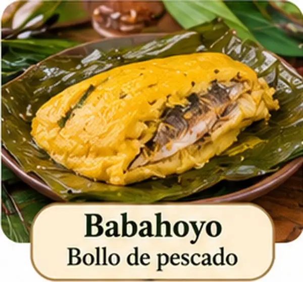
Lugares turísticos
Casa de Olmedo. Casa museo ligada al poeta y político guayaquileño José Joaquín de Olmedo, vinculado a la historia de la ciudad.
Malecón del río Babahoyo. Paseo a orillas del río, ideal para caminar al atardecer.
Parque central y catedral. Corazón histórico de la ciudad, rodeado de comercio y edificios institucionales.
Casa de la Cultura. Espacio para exposiciones, teatro y eventos culturales.
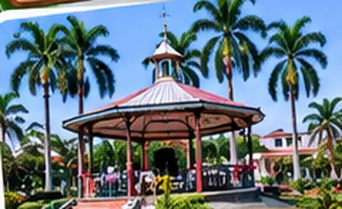
Parque Central
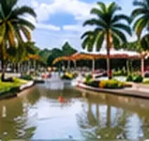
Malecón de BabahoyoCasa de Olmedo
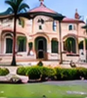
Hacienda La Virginia
Confirma horarios, acceso y servicios antes de visitar estos lugares.
Hoteles donde alojarse
Hotel Ciudad del Río
Grand Hotel Perla Verde
Hotel Cachari
Hotel La Chorrera N1
Nombres tomados de Google Maps; confirma precios, disponibilidad y calificaciones antes de reservar.
Buena Fe, con cabecera en San Jacinto de Buena Fe, está en el norte de la provincia. Antes fue parroquia de Quevedo. Destaca por su producción agrícola y por sus ríos y esteros de agua dulce.
Fecha de cantonización: 7 de agosto de 1992
Más información
Extensión y límites: Ocupa cerca de 569 km² en la zona norte de la provincia. Su cabecera es San Jacinto de Buena Fe.
Economía y producción: Es un cantón agrícola y de comercio: banano, cacao, palma africana, maracuyá y maíz, con mucha producción hacia otras ciudades.
Fiestas y tradiciones: El 7 de agosto festeja su cantonización con desfiles, ferias, elección de reina y actividades deportivas.
Historia y datos curiosos: Es un cantón joven, creado en 1992, que creció con familias llegadas de distintas provincias para trabajar la tierra.
Parroquias
Urbanas: San Jacinto de Buena Fe, 7 de Agosto y 11 de Octubre.
Rural: Patricia Pilar.
Platos típicos
Arroz con menestra y carne, bolones, tigrillo y platos con productos agrícolas locales.
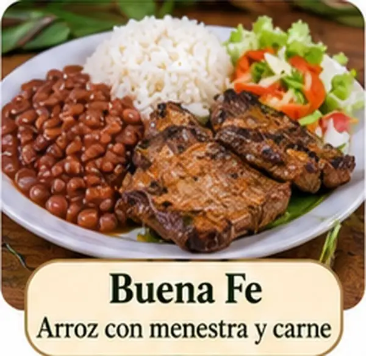
Lugares turísticos
Puerto Bajaña. Balneario de agua dulce sobre un manantial que viene del río Baba; muy visitado en fines de semana.
Patricia Pilar. Parroquia rural con paisajes de finca y espacios naturales.
Fincas agrícolas. Visitas a cultivos de cacao, banano y maíz, típicos de la zona.
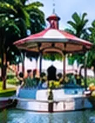
Balnearios de Buena FeParque Central
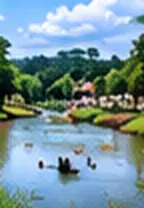
Río San Jacinto
Confirma horarios, acceso y servicios antes de visitar estos lugares.
Hoteles donde alojarse
No encontré hoteles con nombre verificado para este cantón; hay hostales y alojamientos locales pequeños. Usa el enlace para ver la lista actualizada.
Mocache es un cantón del centro de la provincia, que antes fue parroquia de Quevedo. Su territorio es amplio y rural, con una economía basada en cultivos de ciclo corto, ganadería y comercio.
Fecha de cantonización: 28 de mayo de 1996
Más información
Extensión y límites: Abarca unos 562 km² (cerca de 568 según otras fuentes) y tiene una sola parroquia, la de Mocache.
Economía y producción: Su base económica es la agricultura, sobre todo cacao, maíz y arroz, junto con la ganadería.
Fiestas y tradiciones: El 28 de mayo celebra su cantonización con desfiles, ferias y actividades culturales.
Historia y datos curiosos: Se convirtió en cantón el 28 de mayo de 1996. Tiene unos 42.000 habitantes, en su mayoría dedicados al campo.
Parroquias
Urbana: Mocache (cabecera cantonal).
Platos típicos
Bollo de pescado, caldo de gallina criolla, seco de pollo y platos a base de verde y arroz.
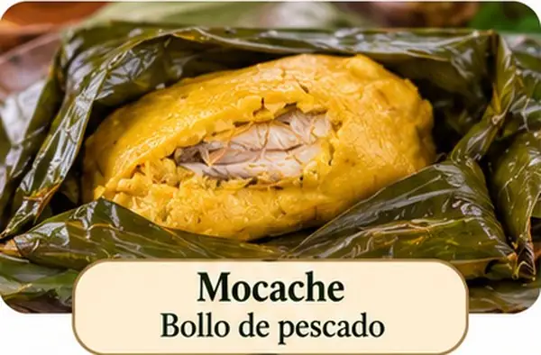
Lugares turísticos
Rancho «La Evidencia». Rancho turístico en el centro de la provincia, con ambiente campestre y actividades montuvias.
Riberas de los ríos. Zonas de pesca y recreación familiar en las orillas.
Paisaje agrícola. Arrozales y fincas, muy visibles en época de cosecha.
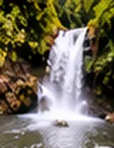
Cascada El SaltoRío MocacheParque Central
Confirma horarios, acceso y servicios antes de visitar estos lugares.
Hoteles donde alojarse
No encontré hoteles con nombre verificado para este cantón; hay hostales y alojamientos locales pequeños. Usa el enlace para ver la lista actualizada.
Montalvo está al sureste de la provincia, en el límite con la Sierra. Es conocido por su música tradicional, como la marimba y el andarele, y por sus ríos de aguas claras.
Fecha de cantonización: 25 de abril de 1984
Más información
Extensión y límites: Tiene unos 362 km². Se ubica al este de Babahoyo, en el borde de la provincia con Bolívar, donde la llanura empieza a subir hacia la cordillera.
Economía y producción: Su economía descansa en la agricultura: arroz, maíz, cacao y banano, además de ganadería y comercio de paso.
Fiestas y tradiciones: El 25 de abril recuerda su cantonización con sesión solemne, desfiles y programas culturales, y también se celebran fiestas montubias.
Historia y datos curiosos: Es un cantón joven, creado en 1984. Por su ubicación funciona como puerta de entrada de la Costa hacia la Sierra, en la ruta a la provincia de Bolívar.
Parroquias
Urbana: Montalvo.
Rural: La Esmeralda.
Platos típicos
Fritada, caldo de gallina criolla, seco de pollo y platos típicos montuvios.
Lugares turísticos
Río Cristal. Uno de los sitios al aire libre más conocidos del cantón, usado como balneario.
Ríos y zonas verdes. Lugares de recreación familiar y contacto con la naturaleza.
Música y fiestas tradicionales. La marimba y el andarele forman parte de la identidad cultural del cantón.
Parque Central
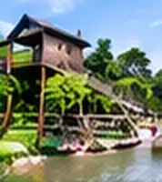
Balnearios del Río Cristal
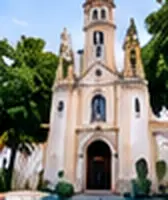
Santuario de la Virgen
Confirma horarios, acceso y servicios antes de visitar estos lugares.
Hoteles donde alojarse
No encontré hoteles con nombre verificado para este cantón; hay hostales y alojamientos locales pequeños. Usa el enlace para ver la lista actualizada.
Palenque está en el suroeste de la provincia, junto al río del mismo nombre. Su economía es sobre todo agrícola y ganadera, y conserva reservas naturales importantes.
Fecha de cantonización: 2 de agosto de 1990
Más información
Extensión y límites: Alcanza unos 570 km², casi todo rural, con bosque, ríos y haciendas en la parte central de la provincia.
Economía y producción: La base es la agricultura: cacao, banano, maíz, arroz y frutas, junto con ganadería. El turismo de naturaleza crece alrededor de su reserva.
Fiestas y tradiciones: El 2 de agosto se celebra su cantonización, con desfiles, programas culturales y actividades campesinas.
Historia y datos curiosos: Se hizo cantón en 1990. Su gran orgullo es la Estación Científica Río Palenque, un bosque protegido que guarda plantas y aves propias del bosque húmedo tropical.
Parroquias
Urbana: Palenque (cabecera cantonal).
Platos típicos
Seco de gallina criolla, caldo de salchicha, bolones y comida tradicional montuvia.
Lugares turísticos
Reserva Biológica Jauneche. Bosque húmedo tropical de gran valor ecológico, usado para investigación y observación de flora y fauna.
Playa de La Reveza. Playa de río, muy concurrida en verano.
Haciendas y celebraciones tradicionales. Rodeos y fiestas típicas de la cultura montuvia.
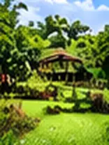
Reserva Ecológica Palenque
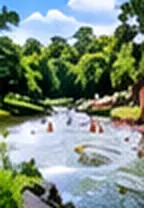
Río PalenqueCascada El Encanto
Confirma horarios, acceso y servicios antes de visitar estos lugares.
Hoteles donde alojarse
Hotel Palenque
Nombres tomados de Google Maps; confirma precios, disponibilidad y calificaciones antes de reservar.
Puebloviejo es uno de los cantones más antiguos de la provincia. Se ubica al sur, entre Babahoyo y Vinces, y su territorio incluye zonas de humedal ligadas al sistema Abras de Mantequilla.
Fecha de cantonización: 7 de febrero de 1846
Más información
Extensión y límites: Abarca cerca de 338 km², entre ríos y zonas bajas de la parte sur de la provincia, junto a Babahoyo, Baba y Ventanas.
Economía y producción: Sus habitantes se dedican sobre todo al cultivo de banano, cacao y arroz, y al comercio que se mueve por sus ríos y carreteras.
Fiestas y tradiciones: El 7 de febrero se celebra su cantonización con desfiles, actos cívicos y ferias comunitarias.
Historia y datos curiosos: Es uno de los cantones históricos: ya existía en 1860, cuando se creó la provincia de Los Ríos junto con Babahoyo, Baba, Vinces, Chimbo y Guaranda.
Parroquias
Urbana: Puebloviejo.
Rurales: Puerto Pechiche y San Juan.
Platos típicos
Bollo de pescado, caldo de gallina, arroz con menestra y platos preparados con verde.
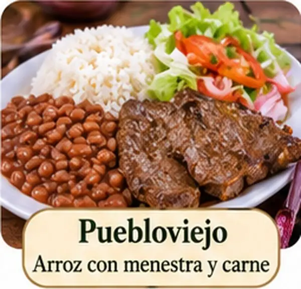
Lugares turísticos
Iglesia y parque central. Centro tradicional del cantón.
Humedal Abras de Mantequilla. Su zona de influencia abarca comunidades de Puebloviejo, Baba y Vinces; es sitio Ramsar y refugio de aves.
Ruta de la miel. Recorrido comunitario sobre el manejo de abejas.
Río PuebloviejoParque Central
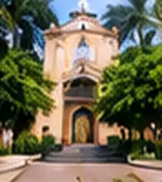
Balneario El Paraíso
Confirma horarios, acceso y servicios antes de visitar estos lugares.
Hoteles donde alojarse
No encontré hoteles con nombre verificado para este cantón; hay hostales y alojamientos locales pequeños. Usa el enlace para ver la lista actualizada.
Quevedo es el cantón más poblado de Los Ríos y un gran centro comercial de la Costa y la Sierra. Su ubicación en la ruta hacia Quito y Guayaquil la volvió una ciudad de paso y de negocios.
Fecha de cantonización: 7 de octubre de 1943
Más información
Extensión y límites: Es de los cantones más pequeños: apenas unos 303 km², pero concentra la mayor población de la provincia, con más de 200.000 habitantes.
Economía y producción: Es el principal centro comercial y agroindustrial de Los Ríos: banano, maíz, palma africana, cacao y un comercio muy activo con la Sierra.
Fiestas y tradiciones: Cada 7 de octubre festeja su cantonización con desfiles, ferias, elección de reina y eventos deportivos y culturales.
Historia y datos curiosos: En 1860 era solo una parroquia. Con el tiempo creció gracias a los ríos y a la agricultura hasta convertirse en la ciudad más poblada de la provincia.
Parroquias
Urbanas: Quevedo, San Camilo, Guayacán, Nicolás Infante Díaz, San Cristóbal, Siete de Octubre, 24 de Mayo, Venus del Río Quevedo y Viva Alfaro.
Rurales: San Carlos y La Esperanza.
Platos típicos
Bollos, ceviches, encebollado, bolón de verde, tigrillo y platos de comida costeña.
Lugares turísticos
Malecón de Quevedo. Paseo junto al río, con zonas de descanso y comida.
Parque central. Plaza principal rodeada de comercio e iglesias.
Centros recreativos y balnearios. Opciones de piscinas y áreas verdes en las afueras de la ciudad.
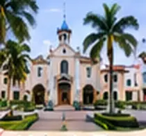
Malecón Eloy Alfaro
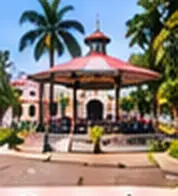
Parque de la MadreRío Quevedo
Confirma horarios, acceso y servicios antes de visitar estos lugares.
Hoteles donde alojarse
Crespotel Hotel Boutique
Hotel Olímpico
Del Rio Hotel
D’ Ruiz Hotel
Hotel Palmar del Sol
Nombres tomados de Google Maps; confirma precios, disponibilidad y calificaciones antes de reservar.
Quinsaloma es el cantón más joven de la provincia. Está en el oriente, cerca de las estribaciones de la cordillera, con clima cálido y tierras fértiles para el cacao, el banano y el maíz.
Fecha de cantonización: 15 de noviembre de 2007
Más información
Extensión y límites: Es el cantón más pequeño de Los Ríos: unos 280 km² y cerca de 19.500 habitantes.
Economía y producción: Se sostiene con la agricultura: cacao, banano, maíz y otros cultivos, con ganadería menor.
Fiestas y tradiciones: El 15 de noviembre se festeja su cantonización con actos cívicos, desfiles y programas comunitarios.
Historia y datos curiosos: Es el cantón más joven de la provincia, creado en 2007, y por eso su historia como cantón apenas va empezando.
Parroquias
Urbana: Quinsaloma (cabecera cantonal).
Platos típicos
Seco de gallina criolla, caldo de gallina, bolones y platos tradicionales de la zona.
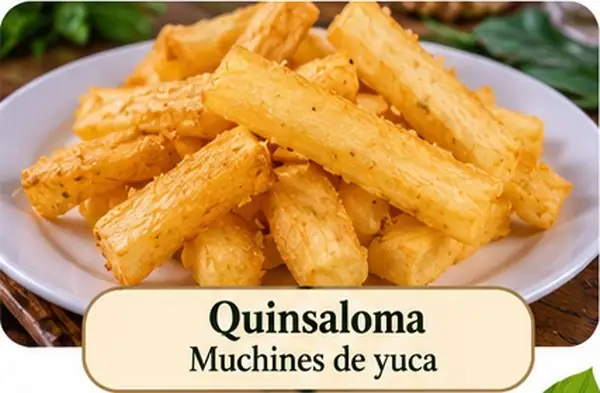
Lugares turísticos
Ríos y cascadas. Balnearios naturales en el entorno rural.
Fincas cacaoteras y bananeras. Paisajes agrícolas con posibilidad de visita.
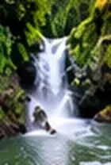
Cascada La Esperanza
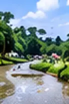
Río QuinsalomaParque Central
Confirma horarios, acceso y servicios antes de visitar estos lugares.
Hoteles donde alojarse
No encontré hoteles con nombre verificado para este cantón; hay hostales y alojamientos locales pequeños. Usa el enlace para ver la lista actualizada.
Valencia está al noreste de la provincia, en zona de transición hacia la Sierra. Su extenso territorio tiene ríos, bosques y fincas, y gran producción de cacao, banano y maíz.
Fecha de cantonización: 13 de diciembre de 1995
Más información
Extensión y límites: Con cerca de 980 km², es el segundo cantón más extenso de la provincia, después de Babahoyo. Está al norte, en tierras de clima cálido y mucha vegetación.
Economía y producción: Vive de la agricultura: banano, cacao, palma africana, maíz y maracuyá, además de ganadería y producción de madera.
Fiestas y tradiciones: El 13 de diciembre se recuerda su cantonización con actos cívicos, desfiles y programas culturales.
Historia y datos curiosos: Fue creado como cantón en 1995, por lo que es uno de los más recientes de la provincia.
Parroquias
Urbana: Valencia (cabecera cantonal).
Platos típicos
Comida montuvia, seco de gallina, caldo de bolas y platos preparados con productos agrícolas.
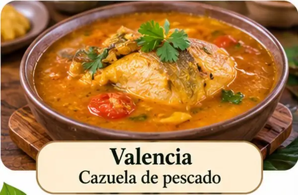
Lugares turísticos
Ríos cristalinos y balnearios. Se practican pesca deportiva, paseos en bote y caminatas.
Cascadas. Cascadas en las zonas rurales y de bosque.
Fincas agrícolas. Recorridos por plantaciones de la zona.
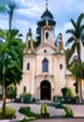
Parque CentralRío San PabloBalneario La Puntilla
Confirma horarios, acceso y servicios antes de visitar estos lugares.
Hoteles donde alojarse
No encontré hoteles con nombre verificado para este cantón; hay hostales y alojamientos locales pequeños. Usa el enlace para ver la lista actualizada.
Ventanas es un cantón del sur de la provincia, a orillas del río Zapotal. Es un centro de comercio y de producción de banano y cacao, y conecta Los Ríos con Bolívar.
Fecha de cantonización: 10 de noviembre de 1952
Más información
Extensión y límites: Mide unos 288 km², uno de los cantones más pequeños de la provincia, pero con más de 70.000 habitantes.
Economía y producción: Combina agricultura (banano, cacao, arroz y maíz) con un comercio dinámico, por ser punto de paso hacia el Guayas y la Sierra.
Fiestas y tradiciones: El 10 de noviembre celebra su cantonización con desfiles, actos culturales y encuentros deportivos.
Historia y datos curiosos: Fue elevado a cantón en 1952. Se ha desarrollado como una ciudad comercial y de servicios para la zona sur de la provincia.
Parroquias
Urbana: Ventanas.
Rurales: Zapotal, Chacarita y Los Ángeles.
Platos típicos
Arroz con menestra, caldo de salchicha, bolones y platos con pescado de río.
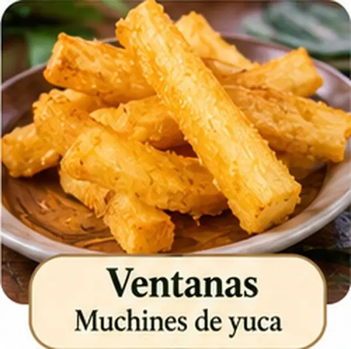
Lugares turísticos
Malecón de Ventanas. Uno de los atractivos más visitados, junto al río Zapotal.
Cascadas San Jacinto. Cascadas en zona rural para visita de un día.
Haciendas históricas. Grandes haciendas productoras de cacao y banano.
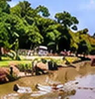
Río Ventanas
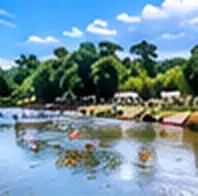
Balneario La PlayitaParque Central
Confirma horarios, acceso y servicios antes de visitar estos lugares.
Hoteles donde alojarse
Hotel del Río Ventanas
Hotel Kalabi INN
Nombres tomados de Google Maps; confirma precios, disponibilidad y calificaciones antes de reservar.
Vinces es llamado «el París chiquito» por la riqueza de la época del cacao, cuando sus familias importaron modas y arquitectura europeas. Hoy mantiene casas patrimoniales, un malecón muy visitado y el humedal Abras de Mantequilla.
Fecha de cantonización: 14 de junio de 1845
Más información
Extensión y límites: Tiene unos 693 km², entre los cantones más extensos. Se extiende por la parte oeste de la provincia, sobre las tierras bañadas por el río Vinces.
Economía y producción: Su riqueza viene del campo: cacao, arroz, banano y maíz. Hace más de un siglo fue una de las zonas cacaoteras más ricas del país.
Fiestas y tradiciones: Cada 14 de junio celebra su cantonización con desfiles, ferias, regatas y eventos culturales a orillas del río.
Historia y datos curiosos: Fue cantonizado en 1845. Durante el auge del cacao se llenó de casonas y familias adineradas, y por eso se le llama "París Chiquito".
Parroquias
Urbanas: Vinces y Balzar de Vinces.
Rural: Antonio Sotomayor (Playas de Vinces).
Platos típicos
Arroz con menestra, seco de gallina, bollo de pescado y platos tradicionales montuvios.
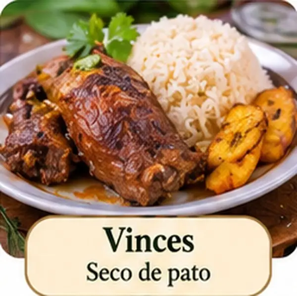
Lugares turísticos
Malecón de Vinces. Principal paseo, concurrido de día y de noche.
Playas de Vinces. Declarado en 1968 como primer balneario de agua dulce del país.
Humedal Abras de Mantequilla. Sitio Ramsar de unas 22.500 hectáreas, refugio de aves y otras especies.
Casas patrimoniales y réplica de la Torre Eiffel. Huella de la época del cacao.
Regata Guayaquil–Vinces. Competencia de botes que se celebra cada marzo.
Malecón de VincesRío Vinces
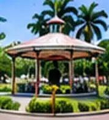
Parque Central
Confirma horarios, acceso y servicios antes de visitar estos lugares.
Hoteles donde alojarse
Hotel Azuay
Hotel Perla Roja
Nombres tomados de Google Maps; confirma precios, disponibilidad y calificaciones antes de reservar.